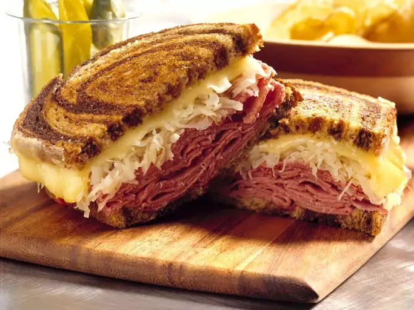

Reuben SandWich

Description
A Reuben is a grilled sandwich featuring corned beef on rye bread. The Reuben
is a menu staple in Jewish-style delicatessens, but it's not technically kosher
because it combines meat and cheese.
What is on Reuben?
A traditional reuben sandwich consists of thinly slice corned beef,swiss
cheese, and sauerkraut on rye bread slathered with Russian or Thousand Island
dressing.
Ingredients
- 8 slices rye bread
- ½ cup Thousand Island dressing
- 8 slices Swiss cheese
- 8 slices deli sliced corned beef
- 1 cup sauerkraut, drained
- 2 tablespoons butter, softened
Steps
- Preheat a large griddle or skillet over medium heat.
- Spread one side of bread slices evenly with Thousand Island dressing. On four bread slices, layer one slice Swiss cheese, 2 slices corned beef, 1/4 cup sauerkraut, and a second slice of Swiss cheese. Top with remaining bread slices, dressing-side down. Butter the top of each sandwich.
- Place sandwiches, butter-side down on the preheated griddle; butter the top of each sandwich with remaining butter. Grill until both sides are golden brown, about 5 minutes per side. Serve hot.